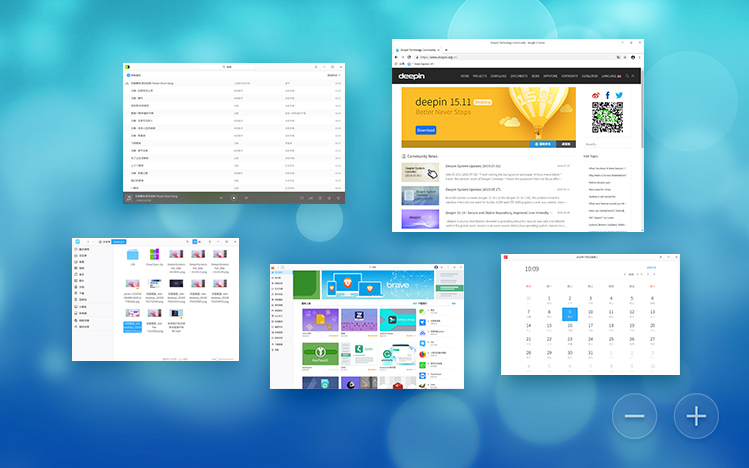

本讲概述
我们已经从概念上讲解了 “虚拟化”
- 程序 = 状态机 (的描述)
- 进程 = 状态机的执行
- 操作系统 = 状态机的模拟器
到底什么是进程？我们还是 “摸不到” 它们
本讲内容
- 进程的近距离接触
- trivial-os 中的进程
- xv6 中的进程
- Linux 中的进程
Trivial-OS: 100 行版本的 OSLabs
Trival OS
理论归理论，实践归实践。
讲多少理论对真正理解操作系统都是没用的。
如何实现一个最小的多进程、多处理器操作系统？
- 支持 “最小” 的二进制 “文件”
- 静态链接
- 4 KiB 大小
- 无格式 (代码/数据混在一起，堆栈在 4 KiB 边界)
- 一个系统调用:
puts(ptr)- 将进程
ptr指针处的字符串打印出来 - 多处理器安全 (原子)
- 不支持进程的创建/替换/销毁等 (进程启动时确定)
- 将进程
Lab1: 物理内存管理
void *kalloc(size_t size) {
static uintptr_t brk = 0;
brk = brk ?
ROUNDUP(brk, size) + size :
(uintptr_t)_heap.start + size;
return (void *)(brk - size);
}
void kfree(void *ptr) { }- (这样好像过不了 easy tests...)
- 但你甚至可以用这个实现操作系统
Lab2: 内核多线程
typedef union task {
struct {
_Context *context;
_AddressSpace vm;
char *page, *cmd;
};
uint8_t stack[8192];
} Task;
Task tasks[] = { ... }, **currents;
#define current currents[_cpu()]
typedef intptr_t lock_t;
void spin_lock(lock_t *lk) { _intr_write(0); while (_atomic_xchg(lk, 1)); }
void spin_unlock(lock_t *lk) { _atomic_xchg(lk, 0); _intr_write(1); }
_Context *schedule(_Context *ctx) {
if (!current) current = &tasks[0];
else current->context = ctx;
do {
if (++current == tasks + LENGTH(tasks))
current = &tasks[0];
} while ((current - tasks) % _ncpu() != _cpu());
return current->context;
}Lab3: 文件系统
void vfs_read(const char *fname, char *buf) {
static char bin_hello[] = {
#include "apps/hello.inc"
};
static char bin_counter[] = {
#include "apps/counter.inc"
};
if (strcmp(fname, "/bin/hello") == 0)
memcpy(buf, bin_hello, sizeof(bin_hello));
if (strcmp(fname, "/bin/counter") == 0)
memcpy(buf, bin_counter, sizeof(bin_counter));
}- 在代码中嵌入一些 “文件”
- 就和刚才我们看到的 Linux 系统的 “initrd” 一样
Lab4: 进程和系统调用
void proc_create(Task *task) {
_Area stack = (_Area) { &task->context + 1, task + 1 };
_AddressSpace *as = &task->vm;
_protect(as);
task->context = _ucontext(as, stack, as->area.start);
}
void proc_pagefault(void *ptr) {
_AddressSpace *as = ¤t->vm;
void *va = (void *)ROUNDDOWN(ptr, as->pgsize);
void *pa = kalloc(as->pgsize);
current->page = pa;
vfs_read(current->cmd, pa);
_map(as, va, pa, _PROT_READ | _PROT_WRITE | _PROT_EXEC);
}
void proc_syscall(_Context *ctx) {
static lock_t lock = 0;
void *pa = current->page + (ctx->GPR1 & (current->vm.pgsize - 1));
spin_lock(&lock);
printf("[syscall@P%d on cpu-%d] puts '%s'\n", current - tasks + 1, _cpu(), pa);
spin_unlock(&lock);
}- 每个应用程序恰好是 “一个页面”
理论与实践
实现操作系统没什么难的。我们不过是在 bare-metal 上编程，使用硬件提供的机制
使用的硬件机制
都是《计算机系统基础》学过的，就是没学懂- I/O (看起来就像是普通的 API 调用)
- 虚拟存储 (进程内存的映射)
- 中断 (打断当前执行的进程)
- 系统调用/异常 (进程主动将控制流交给操作系统)
除此之外，就是普通的 C 程序
- 所以用 C++/Go/Rust 写操作系统都是合理的
- → 我们在考虑 AbstractMachine 的接口
那为什么大家感到这门课困难？
刚才的
trivial-os.c有一个很大的 bug
- 这个程序运行一万次可能都是好的
- 交 Online Judge 就挂了
编程没有那么容易 (你看 xv6 写得挺好，你自己一写就抓瞎)
- 对 specification 理解片面
- AbstractMachine
- 硬件指令
- 多处理器
- 编译器/编译优化
- ……
- 系统软件各个部分复杂的交互
- “吃苦” 是这门课重要的体验
- 虽然我们一直在教怎么用工具，但你们不用啊
- “吃苦” 是这门课重要的体验
xv6: 一个 (完整的) 教学操作系统
xv6 准备
上面的例子太 trivial 了，虽然好理解，但这就是操作系统？
- 不如试试 xv6 (更完整，至少有个 shell)
- 如果我们要调试 xv6，学习进程的实现，应该做什么准备？
- 不要启动多个处理器 (排除干扰)
- 找到调试的切入点
- 从系统启动开始？
- 从系统调用开始？ ← 好像不错，因为进程处于 “已知” 的状态
- 系统调用会切换到操作系统代码执行
- 是理解进程的关键
- 从中断开始？
- RTFM/RTFSC
- 理解必要的东西
理论复习：什么是进程
操作系统模拟的状态机 (程序)
“模拟” 状态机的主要难点
- 模拟内存 ← 进程内存应该就在物理内存里，暂时忽略
- 寄存器现场
- 进程的寄存器怎么实现很有必要知道
- 管理操作系统资源 (例如打开的文件) ← 我们暂时不管
xv6 中进程的表示
enum procstate { UNUSED, EMBRYO, SLEEPING, RUNNABLE, RUNNING, ZOMBIE };
// Per-process state
struct proc {
uint sz; // Size of process memory (bytes)
pde_t* pgdir; // Page table
char *kstack; // Bottom of kernel stack for this process
enum procstate state; // Process state
int pid; // Process ID
struct proc *parent; // Parent process
struct trapframe *tf; // Trap frame for current syscall
struct context *context; // swtch() here to run process
void *chan; // If non-zero, sleeping on chan
int killed; // If non-zero, have been killed
struct file *ofile[NOFILE]; // Open files
struct inode *cwd; // Current directory
char name[16]; // Process name (debugging)
};其他需要的准备
我们需要知道系统调用的入口
- RTFM/RTFSC
- xv6 用中断实现系统调用
int $0x40- 入口是
vector64
- 入口是
我们需要触发一个系统调用
- 不妨观察一下
ls是怎么打印字符的吧 😃
我们还需要观察虚拟机执行的工具
- gdb (之前调试 spinlock 的时候演示过了)
- 查看保存的寄存器现场:
p/x *tf,p *curproc
- 查看保存的寄存器现场:
调试……
福利: iret 回到用户进程
就看不到代码了啊
- 《计算机系统基础》里调试用户进程时遇到的问题
file _ls可以换一个文件/符号表调试- 我们就不能调试多个二进制文件吗？
- 准则：如果你认为这件事应该办到，就能办到
- so simple:
add-symbol-file _ls 0
- 我们就不能调试多个二进制文件吗？
最后, Linux
你们眼里的 Linux 是什么样的？
全功能，就像是 Windows 一样的完整操作系统

Linux 可以有多小？
“文件系统” 里只有两个文件 (戳我下载)：
initramfs
├── busybox
└── init/busybox是个二进制文件- ELF 64-bit LSB executable, statically linked
/init只有 3 行- 实际只做一件事: 执行 busybox
exec /busybox sh
- 实际只做一件事: 执行 busybox
你如果好好学过计算机系统系列的课程
- (懂得如何 RTFM/STFW)
- Linux Kernel 其实也没什么难的
- 只要搞清楚一些基本概念和工具就行了
- 不会下不了手 (下不了手是因为没有受到足够的训练)
让我们运行一下吧！
系统里真的 “几乎什么也没有”
- 看起来完成度堪比我们的操作系统实验 (误)
全靠一个可执行文件 /busybox (作为 sh 在执行)
- 也可以
/busybox ls; 或者echo $PATH
和一个设备文件 /dev/console (没有这个就没有终端了)
让我们给系统丰富丰富
/busybox mkdir -p /bin && /busybox mv /busybox /bin/
c1="arch ash base64 cat chattr chgrp chmod chown conspy cp cpio cttyhack date dd df dmesg dnsdomainname dumpkmap echo ed egrep false fatattr fdflush fgrep fsync getopt grep gunzip gzip hostname hush ionice iostat ipcalc kbd_mode kill link linux32 linux64 ln login ls lsattr lzop makemime mkdir mknod mktemp more mount mountpoint mpstat mt mv netstat nice nuke pidof ping ping6 pipe_progress printenv ps pwd reformime resume rev rm rmdir rpm run-parts scriptreplay sed setarch setpriv setserial sh sleep stat stty su sync tar touch true umount uname usleep vi watch zcat"
c2="[ [[ awk basename bc beep blkdiscard bunzip2 bzcat bzip2 cal chpst chrt chvt cksum clear cmp comm crontab cryptpw cut dc deallocvt diff dirname dos2unix dpkg dpkg-deb du dumpleases eject env envdir envuidgid expand expr factor fallocate fgconsole find flock fold free ftpget ftpput fuser groups hd head hexdump hexedit hostid id install ipcrm ipcs killall last less logger logname lpq lpr lsof lspci lsscsi lsusb lzcat lzma man md5sum mesg microcom mkfifo mkpasswd nc nl nmeter nohup nproc nsenter nslookup od openvt passwd paste patch pgrep pkill pmap printf pscan"
c3="pstree pwdx readlink realpath renice reset resize rpm2cpio runsv runsvdir rx script seq setfattr setkeycodes setsid setuidgid sha1sum sha256sum sha3sum sha512sum showkey shred shuf smemcap softlimit sort split ssl_client strings sum sv svc svok tac tail taskset tcpsvd tee telnet test tftp time timeout top tr traceroute traceroute6 truncate ts tty ttysize udhcpc6 udpsvd unexpand uniq unix2dos unlink unlzma unshare unxz unzip uptime users uudecode uuencode vlock volname w wall wc wget which who whoami whois xargs xxd xz xzcat yes"
for cmd in $c1 $c2 $c3; do
/bin/busybox ln -s /bin/busybox /bin/$cmd
done
mkdir -p /proc && mount -t proc none /proc
mkdir -p /sys && mount -t sysfs none /sys卧槽这也太丰富了吧！
简直就是个 “标配” 版的 Linux
- try everything:
ps,pstree,vi, ...- 以及我们可以 unmount procfs/sysfs...
- 不，其实是超级低配版的
Clarifications:
- Linux Kernel 是 “操作系统”
- 中断处理、系统调用实现、第一个进程的加载
- 其他都是是应用程序和数据
BusyBox: the Swiss Army Knife of embedded Linux
init: 文本文件，仅此而已 (Sha-Bang,#!)
- “丰富一下” 都是应用程序调用系统调用完成的
- (其实一切都是应用程序调用系统调用完成的)
- 感受到了 “操作系统是 API (C 程序)” 这句话的分量
BusyBox
你可以这么理解:
int main(int argc, char *argv[]) {
if (cmd_check(argv[0], "ls" )) return ls_main (argc, argv);
if (cmd_check(argv[0], "find" )) return find_main (argc, argv);
if (cmd_check(argv[0], "pstree")) return pstree_main(argc, argv);
...
if (cmd_check(argv[0], "busybox")) {
return main(argc - 1, argv + 1);
}
return EXIT_FAILURE;
}一个应用程序，集成了常用的命令行工具
- 比 coreutils 小巧得多
- 例子: Android 系统、专为调试构建的系统、……
如果你对系统中任何一个工具的原理感到困惑，RTFSC!
- 例子：想学习如何实现 vi-clone? vim 太大; busybox 正好
BusyBox 是 Linux 上的一个进程
我们可以用之前一切理解进程的工具理解它
$ pmap 1
1: /busybox sh
0000000000400000 2888K r-xp /bin/busybox
00000000008d1000 40K rw-p /bin/busybox
00000000008db000 156K rw-p [heap]
00007fffc4b91000 132K rw-p [stack]
00007fffc4bf2000 12K r--p [vvar]
00007fffc4bf5000 4K r-xp [vdso]
ffffffffff600000 4K --xp [vsyscall]
mapped: 3236K这下你相信了：Linux 原理上真的就是这么 “简单”
- 系统里的一切
- 要么是数据 (包括可执行文件)
- 要么是由系统调用创建的
- 计算机系统里没有魔法
- 你调试 oslab/xv6 的方法，就是开发者调试 Linux Kernel 的方法
Takeaways and Wrap-up
三个操作系统上的进程讲解，复杂度依次降低
- 我们通过理解更简单的系统，去看更复杂的系统
- trivial-os (hello-world)
- xv6 (sh, ls)
- Linux (busybox)
复习题：
- 回看视频，调试 xv6 代码
- 开始做 oslab 吧！